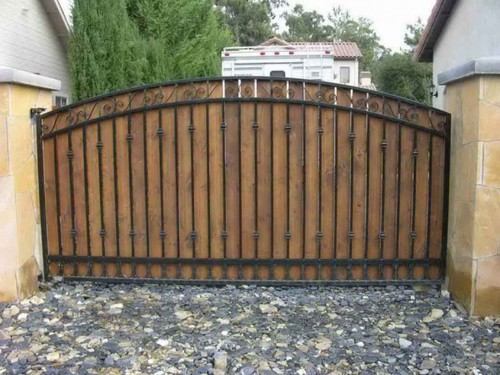

Solid Metal Gates in Bromley Cross Greater Manchester England BL2 4

Why Wrought Iron instead of a Wood Gate or Metal Mounted Entrance? That is easily a concern of your individual preference, and even the appearance you wish to achieve. Among the possible benefits of Wrought Iron gates is they do not block your perspective out past them, or obstruct sunlight can be found in. Actually, it's not a inquiry of which is better, , just which choice you will certainly discover much more pleasing.
Affordable Metal Side Gates near Bromley Cross
Becoming informed health care consumers: Asian migrant mothers in NZ
Presented at the Prevention, protection and promotion. Second International Asian Health and Wellbeing Conference, November 11,2006.
Cite as: DeSouza, R. (2006). Becoming informed health care consumers: Asian migrant mothers in New Zealand. In S. Tse, M.E. Hoque, K. Rasanathan, M. Chatterji, R. Wee, S. Garg, & Y. Ratnasabapathy (Eds.), Prevention, protection and promotion. Proceedings of the Second International Asian Health and Wellbeing Conference, November 11, 13-14, (pp. 196-207). Auckland, New Zealand: University of Auckland.
Abstract A central tenet of New Zealand’s midwifery and maternity services is the emphasis on a partnership between two equals namely the midwife and the woman. However, such a partnership rests on the notion of an informed consumer who is independent. When the consumer is a migrant who has experienced social upheaval, lost their knowledge resources and is experiencing isolation and language barriers, they may take up a more dependent role rather than the autonomous and self-determining consumer that midwives are prepared for. This imbalance can mean that health professionals are challenged to take up less facilitative and more authoritative positions and in turn migrant mothers and their partners are challenged to develop more proactive roles. This paper presents partial and preliminary findings from a qualitative study of Asian mothers in New Zealand with regard to their information needs.
Introduction The notion of a partnership between the midwife and the woman underpins New Zealand midwifery models, where both parties are equal and make equally valuable contributions (Pairman, 2001). Midwives bring their knowledge, skills and experience and the woman brings her knowledge of herself and her family and her needs and wishes for her pregnancy and birth. However, for women become equal partners, they need to make informed decisions about their health and this in turn depends on having access to relevant and timely information. For mothers, biological knowledge about the pregnancy, birth and labour is only one form of knowledge. In addition, social knowledge and institutional knowledge are important (Lazarus, 1994). While biological knowledge can be obtained from authoritative sources like experts and electronic resources, social and institutional knowledge are more difficult to access for migrant women. AS access to these forms of knowledge is dependent on context and social networks which migrant mothers often lose in the social upheaval of migration. For many women who migrate, the separation from family and peers leads to ‘breaks in knowledge’ (Fitzgerald et al., 1998) and the loss of these knowledge resources which help prepare the mother for the processes of pregnancy, childbirth and parenting, creates what Liem (1999, p.157) calls a “vacuum of knowledge”. The vacuum of knowledge needs to be filled and most often this role falls heavily on health professionals (DeSouza, 2005).
This paper begins with a description of the dramatic population changes in New Zealand with a particular focus on Asian women. A discussion about receiving accurate and timely information follows suggesting that the quality of communication between women and their carers is critical for feeling safe and satisfied with care. An outline of research conducted in Auckland New Zealand follows and the findings are presented through the transition to parenthood. Strategies for managing the transition to parenthood and becoming an informed consumer are discussed with the paper concluding with practice, policy and research recommendations.
Literature Review The following section contextualises the study by reviewing the changing demographics in New Zealand society with a focus on Asian women. This is followed by a discussion about the link between information and communication and satisfaction with care for migrants.
An increasingly diverse New Zealand Service providers need to develop skills and competence for working effectively with diverse members of New Zealand society. International trends show that people of diverse racial, ethno-cultural and language backgrounds are underserved by health and social services, experience unequal burdens of disease, experience cultural and language barriers to accessing appropriate health care, and receive a lower quality of care when they do access health care services in comparison with members of the population (Johnstone & Kanitsaki, 2005). The 2001 Census revealed growing numbers of M␣ori (14.5%), Pacific Island people (5.6%), Chinese (2.2%) and Indian (1.2%), in addition to European/Pakeha who make up 79.6% of the population. There has been a 20% increase in the number of multilingual people and an increase in people whose religion was non-Christian. People who practice Hinduism increased by 56%, there was a 48% increase in Buddhists and a 74% of people practising Islam.
Asians are the fastest growing ethnic group; increasing by around 140% over the last ten years and predicted to increase by 122% by 2021 due to net migration gains rather than high fertility rates (Statistics New Zealand, 2005). The Asian community has the highest proportion of women (54%), (Scragg & Maitra, 2005) who are most highly concentrated in the working age group of 15-64 years compared to other ethnic groups, a reflection of a skills focused migration policy. 23% of New Zealand women were born overseas, predominantly in the UK and Ireland, Asia and the Pacific Islands. Some of the most dramatic demographic changes are evident in the Asian community, for example in the period between 1991 and 2001, the number of women originating from the Republic of Korea increased 23 times from 408 to 9,354, numbers of women from China quadrupled from 4,620 to 20,457 and women from South Asia doubled in the same time period (Statistics New Zealand, 2005). Such diversity has been unprecedented and present both unique challenges and opportunities to health and social service providers and policy makers.
Communication, caring and safety Migration often results in the loss of reference points in the form of family networks, peer support and familiarity with health services. Such a loss amplifies the necessity for receiving accurate and timely information. Davies and Bath (2001) suggest that information provision during pregnancy and childbirth is critical for both supporting choices that are made but also in preparing women to manage uncertain outcomes. Citing a study by Kirkham (1989), Davies and Bath argue that women’s satisfaction with maternity services in secondary care is primarily dependent on the quality of communication between the women and their carers. Little is known about the health care experiences of migrant women, however, they are thought to report more acute concerns about communication and sensitivity of care than the population in general (Davies & Bath, 2001). Furthermore, language barriers can exacerbate isolation and promote dependency on health workers rather than enhancing self- determination, a dominant midwifery discourse. Small, Rice, Yelland, & Lumley (1999) found that Vietnamese, Turkish and Filipino women in Melbourne who were not fluent English speakers experienced problems in communicating with their caregivers and this made experiences of care less positive. Of more importance than knowledge about cultural practices, was care experienced as unkind, rushed, and unsupportive. Another Australian study found that migrant patients (and their families) did not feel safe when in hospital. Safety was undermined when effective communication with caregivers was compromised through being unable to access qualified health interpreters or being unable to have family members around to advocate and participate in decision-making (Johnstone & Kanitsaki, 2005).
The study Migrants tend to maintain better health than the local population initially so often have little to do with hospitals (McDonald & Kennedy, 2004), but motherhood is a common aspect of migration requiring contact with the health system. The study took place in Auckland, New Zealand among White migrants (from South Africa, United Kingdom and the United States of America), Muslim Arab migrants (from Iraq and Palestine) and Asian women from three ethnic communities (Korean, Chinese and Indian) as part of a larger Families Commission funded study. Ethics approval was obtained from the Auckland University of Technology Ethics Committee and the Plunket Ethics Committee. Participants for the migrant mothers’ focus group were recruited though Plunket nurses who invited women to participate, selection criteria limited participation to migrant women who had become mothers within the last 12 months in New Zealand. Informed consent was obtained from all participants and consent forms were translated into Arabic, Korean and Chinese. Data collection involved focus groups using semi-structured interviews conducted in English, Chinese and Korean. The groups were facilitated by interviewers proficient in English and the language spoken by the women. These interviews were recorded and transcribed, translated into English if necessary and verified by an independent translator. The interview transcripts were then coded and analysed. The codes were clustered according to similarity and reduced. Similar phenomena were grouped into categories and named. The process was one of constant comparison, iteratively classifying and grouping the material to identify preliminary categories and sub- categories. This paper reports on a sub-theme about information needs and the findings focus on Asian women.
Findings Midwives caring for migrant Asian parents are challenged to reconfigure their model of partnership and in turn migrant Asian parents experience a shift from birth being a social event to more of an individual responsibility. This shift requires a more proactive and self- sufficient role for women and their husbands, who become more involved than they might have been in their country of origin. In addition, language and communication drive experiences of care. This separation from knowledge resources places greater responsibility onto midwives to assume a more central role in information provision and support. In particular migrant mothers require detailed, individualised, stage specific information in order to take up the role of informed consumer.
Antenatal period Not only are migrant mothers confronted with changing bodies and roles when they become pregnant, they also have to deal with an unfamiliar health system in the absence of a support network and knowledge resources they might have had in their countries of origin. In this study, Asian migrant women had to make decisions that required access to information in order to ascertain the choice of maternity carer and access to ante-natal classes. At this time women who were not fluent or confident English speakers had to contend with linguistic and cultural barriers to accessing services.
The loss of traditional sources of knowledge meant that pregnancy in a new country moved from being a social event and responsibility to being an individual one (DeSouza, 2005). This required the participants to become more involved and proactive in seeking out detailed, timely and specific information about the stages of their pregnancy. This allowed them to become more involved in the pregnancy than if they had been in their country of origin where this responsibility would have been shared. Husbands also became more involved in the processes of pregnancy, than they might have been in their countries of origin. Knowing where to begin the process was difficult:
I had no idea at all about the system here. It was through the pregnancy test kit that I found out I was pregnant, but did not know what the next step was. I wondered whether I had to show my test result to my GP. I had no knowledge of how to get the necessary information [Korean participant].
Obtaining language specific and precise information was important for many Korean women. Being given broad encouragement was not a substitute for specific information and was perceived as a laissez-fare attitude to their wellbeing.
I was given some information, but I didn’t read it, as it was not in Korean. I always felt that I was one step behind. It was not only the midwife who did not give enough information or necessary support. Everyone kept saying, “It is okay, you are doing well” but gave few information or specific support [Korean participant].
Pregnancy in a new country raised the need to develop active decision making strategies and to choose a health care provider. Many of the women were proactive about finding out about the New Zealand health system and turned to authoritative sources for information:
Luckily, I was attending school and the assignment from school was to complete a project. I chose ‘New Zealand’s maternity system’ and that was how I got some ideas about my situation [Korean participant].
For some women the absence of family members and the access to information meant that they could monitor themselves through the stages of pregnancy and this led to developing increased knowledge and greater self-sufficiency:
I have to take care of my own self. I found this good thing in New Zealand that you should take care of the baby and you should be aware of foods and what is going on each and every month, each and every week, what really is important [Indian participant].
One Indian woman found that she was more engaged in her pregnancy because her previous pregnancy was a joint responsibility with other family members while this time round she had to take more personal responsibility:
Why didn’t I get the feelings the first time? Time passed with families, mother in law, sisters, brothers and time passed like anything but here we are alone, thinking about the baby early and so every moment for me was a first time moment, even though I’m a second time mother [Indian participant].
Many husbands become more involved during the pregnancy and were more in tune with what was happening to their partner’s bodies:
We used to wake up and the first thing we used to do was take a book and read ‘Okay, so now our baby’s doing that’ and he will pat me on my tummy saying ‘Oh my little one’ you know? So I doubt whether the same feeling would have come if my pregnancy was in India [Indian participant].
Language dictated the choice of LMC for many Chinese women and they, more than any other cohort, relied on their networks to find a care provider with Chinese newspapers also being a useful knowledge resource.
She speaks English and can speak Chinese. After I met her, I had a good impression of her. So I decided to have her as my midwife. My midwife has a partner who is also a Chinese (Malaysian Chinese). When I gave birth to my child, her partner delivered my child. The whole process was quite smooth [Chinese participant].
Antenatal classes Antenatal classes were a pivotal mechanism for acquiring knowledge:
When you know something it’s better than just going without knowledge and you’re worried. , Yeah and as a first time mother I didn’t really know what was going to happen or what to expect and then yeah, I learnt a lot from that [Indian participant].
And for gaining confidence about what was to come by having some broad knowledge about what was to come:
I felt it was not so relevant to my delivery. But I felt more at ease and more confident during delivery. There are Chinese people in the class. The midwife was also careful when teaching us. We could understand her. My husband’s English is very good. He escorted me to the class. It was about some basic ideas. I didn’t find it useful for my delivery. During delivery, you follow the instructions of your midwife and have no time to reflect on what was taught in the class. But you feel relieved and less anxious. You roughly know what is going to happen and what is what [Chinese participant].
But language barriers made classes inaccessible for some:
I felt frustrated because I could not understand everything [Korean participant].
Both my husband and I have poor English so only attended once [Korean participant].
This section highlighted the importance of receiving detailed and specific information in one’s own language and how this influences the choice of LMC or attendance at ante-natal classes. Knowing where to start can be difficult. For women and their husbands who want to take up an informed consumer role there are resources available which lead women and their husbands to be more self-sufficient, proactive and engaged in the process.
Labour and delivery Labour and delivery was also a time when information, support and cultural needs were highlighted. Women wanted information that was specific to their stage of labour and that was individualised (some felt they had too much and others too little information to feel that they could make the best choice for themselves). The value of specific stage by stage information was supported by a Korean participant rather than broad encouragement:
In Korea mums are given lots of warning and feedback of what is happening during labour, and told by Dr’s what to do regularly. This was missing in NZ. It would be good to be given feedback of our progress of labour and how many cm we are at each stage after the vaginal examinations. I was not told this. Not enough explanation and only told that “You are doing well” [Korean participant].
The need for not only specific information but also to be told the best option or given enough information to make the best choice was also voiced. The facilitative role of health providers was called into question with some participants wanting a more authoritative role. The partnership between the midwife and the woman underpins the midwifery model in New Zealand maternity services and is based on equity and the acknowledgement that both parties make equally valuable contributions (Pairman, 2001). Midwives bring their knowledge, skills and experience and the woman brings her knowledge of herself and her family and her needs and wishes for her pregnancy and birth. Midwives have moved from authoritative sources of knowledge to models of partnership and collaboration in a bid to empower women and distinguish themselves from the more hierarchical professional models of medical, nursing and obstetric practise (Tully, Daellenbach, & Guilliland, 1998). However, this is predicated on the notion of the informed consumer:
In NZ different delivery options are given to mums and we are asked to choose by ourselves but unable to choose the best options for ourselves due to lack of sufficient knowledge. Want more advice and guidance and even want to be told which better option for us is. So in the end we have limited options due to not enough knowledge of all the pros and cons of delivery methods [Korean participant].
Information does need to be individualised, one participant who felt that she was given too much information:
During the labour the ladies said that I need an epidural because I can’t go through the pain anymore, the anaesthetist comes in the room and says out of 150 million there are 10% of cases with risk all that information beforehand [Indian Participant].
This section has highlighted the importance of detailed and specific information and the need for information to be individualised. The midwifery model of care which emphasises facilitative rather than authoritative relationships was challenged.
Post-partum The postnatal period is a critical time for women but it is also a time when their needs are often not met (Baker, Choi, Henshaw, & Tree, 2005). In the postpartum, information needs were an issue, women needed to know how to handle an unpredictable and unknown baby, there were issues around feeding from a cultural point of view and what to feed and when, the amount and type of information became important too:
We need more information. Iron deficiency for example. We don’t know what to feed our babies for this. And solid feeding too. We don’t know how to begin solid feeding with Korean food. The information is only on Kiwi way of feeding [Korean participant]. I didn’t even know how to care for her after delivering baby. No knowledge. Had to cook and clean and do everything after delivering baby , had no one to help. Breastfeeding was hard, received no help. Got sore bones and joints. No Korean appropriate services available, so often missed out altogether on information and the right kind of help [Korean participant].
However, not everyone wanted to be an informed consumer:
Yeah, you just want to get out of that place and these people are giving you like the advantages and disadvantages of various things, you don’t want to hear all these things [Indian participant].
The post-partum period highlights the need for the expansion of the information agenda from New Zealand models of infant feeding to incorporating other cultural models and the need for language specific information about breastfeeding. Some women contested the pressure to be informed consumers. The following section provides some discussion and recommendations.
Discussion
This section focuses on five key areas where further exploration and consideration by both migrant mothers and health professionals would be beneficial, namely:
- Providing detailed and individualised information;
- Language support;
- Preparing women for new discourses of maternity;
- Developing fluency; and Developing health literacy.
Providing detailed and individualised information
Health-care providers have a responsibility to make available, accessible and up-to-date information. However this is not as easy as it sounds, when facilitating informed choice. Midwives and other health professionals are caught in a difficult position and have to strike other balances, such as between giving enough information for the woman to make a choice but not giving too much information and frightening her (Levy, 2006). They also have to delicately meet the needs of women and to appear neutral in their advice, when they might have strong feelings regarding certain issues. In this study, migrant mothers looked to health professionals to fill the vacuum of knowledge by being authoritative rather than facilitative. Increasingly research shows that information is more effective when it is tailored to the individual and their needs (Rapport et al., 2006) and relevant to the women’s current stage of pregnancy (Benn, Budge, & White, 1999). In addition detailed information rather than ‘big picture’ was valued. Therefore highlighting the need for individualised and detailed information when planning for the provision of maternity information (Soltani & Dickinson, 2005). Information that is available in ones own language or written information is important. While translated information is available about childbirth in New Zealand from the Maternity Services Consumer Council of New Zealand it is not clear how well this information is distributed or whether LMCs are aware of its existence.
Language support Communication as a part of information support can be improved through implementing a two pronged strategy. First, health professionals and systems can become more skilful at information provision through linguistic competence and secondly through identifying and assisting in the extension of sources of information. Health providers can assist new migrants to identify information sources and encourage women to develop information seeking skills. Developing linguistic and cultural competence can be achieved by:
- Providing bilingual /bicultural staff;
- Providing foreign language interpreting services; Having link workers/advocates; and Having materials developed and tested for specific cultural, ethnic, and linguistic groups;
- Having translation services including those of:Legally binding documents (for example, consent forms); Hospital signage; Health education materials; and Public awareness materials and campaigns, including ethnic media in languages other than English. Examples include television, radio, internet, newspapers and periodicals (Szczepura, 2005).
In the USA, health care organisations are required to both offer and provide language services such as bilingual staff and interpreter servicesat no extra cost to clients who require it. It is recommended that information about services is provided both in writing and in a timely manner with credentialed interpreters and bilingual workers available (U.S. Dept. of Health and Human Services, 2003).
Lastly, research is needed to assess the level of unmet information needs among new migrant women in greater depth. To borrow from a recommendation from a recent study: Research is needed on cross-cultural and intercultural communication in particular on the nature and impact on Culturally and Linguistically Diverse (CALD) people not being able to communicate with service providers; not being able to get information and explanations about ‘what is going on’; not being able to get information in a timely manner; not being given information in a culturally appropriate manner; not being given any information at all; being given too much information; being given unwanted information (Johnstone & Kanitsaki, 2005, p.15).
Preparing women for new discourses of maternity The study findings highlight the need for health providers to assist women socialise into new discourses in particular the discourse of partnership and the informed consumer. A useful mechanism for socialising women into an informed consumer discourse is to provide multi- lingual antenatal classes. Many women in this study felt the need for specific and detailed information in order to make the best choice but some women also wanted to be told the best option. The facilitative role of health providers was called into question with some participants wanting their LMC to have a more authoritative style. The partnership model underpinning midwifery in New Zealand maternity services assumes that midwives bring their knowledge, skills and experience and women brings their knowledge of themselves and their families to the relationship. This is intended to be a collaborative and empowering relationship but it requires that the woman wants the responsibility of being an informed consumer. It appears that the notion of partnership cannot contain women who don’t want the equal responsibility that is required. In addition, one needs to be information literate in order to take this role on (Henwood, Wyatt, Hart, & Smith, 2003).
Developing fluency Lack of English language proficiency impacts on access to health care, employment prospects, income levels and other factors which determine health status (Asian Public Health Project Team, 2003).The link between language and accessing health care is further strengthened by the findings of a New Zealand study where self-rated fair or poor health was found to be associated with Chinese-only reading knowledge, residency of more than five years and regretting having come to New Zealand (Abbott, Wong, Williams, Au, & Young, 2000). While a study of Chinese American women which found that lack of English language ability was a major barrier to access (Liang, Yuan, Mandelblatt, & Pasick, 2004). Ensuring that migrants are aware of Language line and encouraging them to take up their English for Migrants language courses, as proficiency is a key settlement enhancer. The migrant levy that migrants pay when coming to New Zealand entitles migrants to take up English language classes (English for Migrants). The Tertiary Education Commission pays for English language tuition on behalf of migrants to New Zealand who have pre-paid for their training, recent news reports indicate that few migrants take up these classes.
Developing health literacy The development of health literacy among health care recipients is gaining prominence as a health promotion strategy. Health literacy is defined by the World Health Organisation as “ the cognitive and social skills which determine the motivation and ability of individuals to gain access to, understand, and use information in ways that promote and maintain good health” (World Health Organization, 1998, p.10). Health literacy is a stronger predictor of health status than socio-economic status, age, or ethnic background (Speros, 2005). Speros claims that the lack of health literacy can act as a barrier to navigating the system and functioning successfully as a consumer, presumably then the combination of socio-economic status, ethnic background and low health literacy compound the issues of access. Speros cites a large study by Williams et al. (1995) which found that one-third of English -speaking patients at two public hospitals in the USA could not read and understand basic health-related materials. Sixty per cent could not understand a routine consent form, 26% could not understand information written on an appointment slip, and 42% failed to comprehend directions for taking medications. While little is known about health literacy is known in New Zealand, overseas research suggests that being culturally and linguistically different magnifies the problem.
Conclusion This study highlights the importance of information provision for health care consumers, in particular migrant mothers. The study shows that migrant women frequently experience a vacuum of knowledge that needs to be filled. Factors such as poor English language proficiency, limited networks and unresponsive health providers can all increase the likelihood of migrant mothers experiencing a problematic birth experience and poor outcomes. This research suggests that improving the quality and range of information for migrant mothers and the inter-cultural resources for health providers could improve outcomes.
Further research is needed into how maternity information is provided and it is suggested that more attention is paid to the information needs of migrant mothers and migrants in general. Language proficiency is vital not only with regard to access to services but also for being empowered and prepared for the dual transition of parenthood in a new country. The study highlights the need for further exploration of changing demographics on dominant health care discourses in New Zealand such as partnership and whether there is space for new discourses. There are several aspects that contribute to a satisfying experience of health care for migrant mothers and these appear to be the ability to access a service, being able to obtain relevant information and having a supportive relationship between themselves and providers. These appear to be mutually dependent factors.
Acknowledgements
Funding for this research was provided by grants from The Families Commission and the Plunket Society volunteers in Central Auckland. The following people are gratefully acknowledged for their contributions: The mothers, Elaine Macfarlane, Sheryl Orton, Michele Hucker, Dr Wanzhen Gao, Rose Joudi, Paula Foreman, Rezwana Nazir, Lorna Wong, Jane Vernon, Zahra Maleki, Nagiba Mohamed, Hyeeun Kim, Catherine Hong and Stephanie Shennan.
References
- Abbott, M. W., Wong, S., Williams, M., Au, M. K., & Young, W. (2000). Recent Chinese migrants’ health, adjustment to life in New Zealand and primary health care utilization. Disability & Rehabilitation, 22(1/2), 43-57.
- Asian Public Health Project Team. (2003). Asian Public Health Project Report. Auckland: Ministry of Health Public Health Directorate.
- Baker, S., Choi, P. Y. L., Henshaw, C., & Tree, J. (2005). I felt as though I’d been in jail’: Women’s experiences of maternity care during labour, delivery and the immediate postpartum. Feminism & Psychology, 15(3), 315-342.
- Benn, C., Budge, R. C., & White, G. E. (1999). Women planning and experiencing pregnancy and childbirth: Information needs and sources. Nursing Praxis in New Zealand, 14(3), 4-15.
- Davies, M. M., & Bath, P. A. (2001). The maternity information concerns of Somali women in the United Kingdom. Journal of Advanced Nursing, 36(2), 237-245.
- DeSouza, R. (2005). Transforming possibilities of care: Goan migrant motherhood in New Zealand. Contemporary Nurse, 20(1), 87 – 101.
- Fitzgerald, M., Ing, V., Heang Ya, T., Heang Hay, S., Yang, T., Duong, H., et al. (1998). Hear our voices: trauma, birthing and mental health among Cambodian women. Paramatta: Ausmed.
- Henwood, F., Wyatt, S., Hart, A., & Smith, J. (2003). ‘Ignorance is bliss sometimes’: constraints on the emergence of the ‘informed patient’ in the changing landscapes of health information.Sociology of Health and Illness, 25(6), 589-607.
- Johnstone, M.-J., & Kanitsaki, O. (2005). Cultural safety and cultural competence in health care and nursing: An Australian study. Melbourne: RMIT University.
- Lazarus, E. S. (1994). What do women want?: Issues of choice, control, and class in pregnancy and childbirth. Medical Anthropology Quarterly(8), 25-26.
- Levy, V. (2006). Protective steering: a grounded theory study of the processes by which midwives facilitate informed choices during pregnancy Journal of Advanced Nursing, 53(1), 114-122.
- Liang, W., Yuan, E., Mandelblatt, J. S., & Pasick, R. J. (2004). How do older Chinese women view health and cancer screening? Results from focus groups and implications for interventions. Ethnicity & Health Issue, 9(3), 283-305.
- Liem, I. I. L. (1999). The challenges of migrant motherhood: The childrearing practises of Chinese first-time mothers in Australia. In P. L. Rice (Ed.), Asian mothers western birth (pp. 135-160). Australia: Ausmed.
- McDonald, J. T., & Kennedy, S. (2004). Insights into the ‘healthy immigrant effect’: Health status and health service use of immigrants to Canada. Social Science and Medicine, 59(8), 1613-1627.
- Pairman, S. (2001). International trends and partnerships in midwifery education. New Zealand College of Midwives(24), 7-10.
- Rapport, F., Iredale, R., Jones, W., Sivell, S., Edwards, A., Gray, J., et al. (2006). Decision aids for familial breast cancer: Exploring women’s views using focus groups. Health Expectations, 9(3), 232-244.
- Small, R., Rice, P. L., Yelland, J., & Lumley, J. (1999). Mothers in a new country: The role of culture and communication in Vietnamese, Turkish and Filipino women’s experiences of giving birth in Australia. Women Health, 28(3), 77-101.
- Soltani, H., & Dickinson, F. M. (2005). Exploring women’s views on information provided during pregnancy. British Journal of Midwifery, 13(10), 633 – 636.
- Speros, C. (2005). Health literacy: Concept analysis. Journal of Advanced Nursing, 50(6), 633-640. Statistics New Zealand. (2005). Focusing on women. Retrieved January 25, 2005, from
- Szczepura, A. (2005). Access to health care for ethnic minority populations. Postgrad Med J, 81(953), 141-147.
- Tully, L., Daellenbach, R., & Guilliland, K. (1998). Feminism, partnership and midwifery. In R. Du Plessis & L. Alice (Eds.), Feminist thought in Aotearoa/New Zealand (pp. 245-255). Auckland: OUP .
- U.S. Dept. of Health and Human Services, (2003). Training culturally competent primary care professionals to provide high quality healthcare for all Americans : the essential role of Title VII, Section 747, in the elimination of healthcare disparities : third annual report to the Secretary of the U.S. Department of Health and Human Services and to Congress. Washington, D.C.: U.S. Dept. of Health and Human Services, Health Resources and Services Administration.
- World Health Organization. (1998). Health promotion glossary. Geneva: Division of Health Promotion, Education and Communications Health Education and Health Promotion Unit, World Health Organization.
Share this:
Why Wrought Iron as opposed to a Wooden Entrance or Metal Mounted Entrance? One of the possible advantages of Wrought Iron gates is they don't obstruct your view out past them, or obstruct sunshine coming in. It is definitely good for your brand new Wrought Iron entrance to function and even look beautiful the day it's set up, yet if the products used are not the finest, our recently added street charm could be brief lived.
Wrougnt Iron Gates near Bromley Cross Wrougnt Iron Gates near Bromley Cross